Direct Entropy Measurements in Mesoscopic Quantum Systems
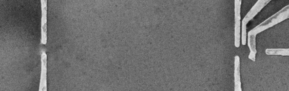
Nik Hartman
https://nikhartman.github.io/ng_10-18
Northrop Grumman -- October 15th, 2018
Important People
Folk Group -- UBC:
Manfra Group -- Purdue:
measurement of thermodynamic entropy
Traditional entropy measurements reveal order and degeneracies in macroscopic systems (magnets, crystals, ...)
fermions with strong interactions
Identification of a (dipolar) Ising ferromagnet
- Dysprosium ethyl sulfate
$C_{6}H_{15}DyO_{12}S_{3}$ - $Dy^{3+}$ ions form hexagonal lattice
- Each $Dy^{3+}$ has J = 15/2 with 3 n.n.
- Dipolar interactions between ions where $g_{\parallel}\neq0$ and $g_{\perp}=0$
- Lowest energy states are $J_z = \pm9/2$ doublet
- This is an Ising magnet!
- $S(T\rightarrow0) = 0$
and $S(T>>T_C) = k_B N \ln{2}$
A.H. Cooke, D.T. Edmonds, C.B.P. Finn and W.P. Wolf, Proc. Roy. Soc. (London) Ser. A 306, 313 (1968).

geometric frustration revealed through entropy

Ramirez, A. P., Hayashi, A., Cava, R. J., Siddharthan, R. & Shastry, B. S. Zero-point entropy in 'spin ice'. Nature 399, 333–334 (1999).
- Resudual low temperature entropy matches water ice
- Ising spins analogous to hydrogen bonds
What about measuring entropies near $k_B$?
- Systems with strong interactions (superconductivity, spin-orbit, magnetism) or non-trivial bandstructure topology (TIs, Majorana modes, ...) can have single (quasi-)particle statistics distinct from fermions and bosons.
- The magnetic moment and heat capacity of a single particle are too small to derive the entropy from susceptibility or calorimetry measurements.
looking for non-trivial single-particle statistics
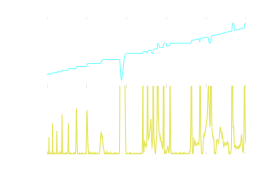- Strong magnetic field quantizes transverse (Hall) resistance: $R_{Hall} = \nu \frac{h}{e^2}$
- $\nu$ can be an integer (IQHE) or fraction (FQHE)
- Both integer and fractional states identified by zero longitudinal resistance
- Focus on what is happening at $\nu=5/2$
looking for non-trivial single-particle statistics

- Moore-Read state: most popular theory to explain physics at $\nu = 5/2$
- $\nu = 5/2$ is an inert $\nu = 2$ state plus a $\nu = 1/2$ composite fermion state
- Composite fermions pair to form a spinless (p-wave) gapped state
- Additional flux ($B^{*}\neq 0$) introduces vortices: Moore-Read quasiparticles
- MR quasiparticles have non-Abelian statistics: $\hat{P} \lvert \psi(x_1, x_2) \rangle \neq e^{i\phi} \lvert \psi(x_2,x_1) \rangle$
Identifying Moore-Read quasiparticles
- Fractional charge: $e/4$ (shot noise, charging energy)
- Braiding two quasiparticles transforms ground state (interferometry)
- Degenerate groundstate: $2^{N_{qp}/2 - 1}$ (entropy)
Measuring the entropy of the Moore-Read state
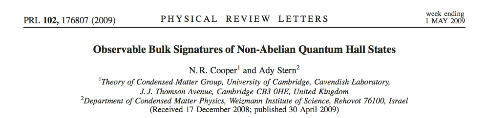Low-temperature residual entropy of Moore-Read quasiparticles
$S = k_B \ln{2^{\frac{N_{qp}}{2} - 1}} \Rightarrow s_{MR} = \frac{1}{2} k_B n_{qp} \ln{2}$
where $n_{qp} = 4 \left| n - \frac{5}{2} \frac{eB}{h} \right|$
Measuring the entropy of the Moore-Read state
Maxwell relation: $\left(\frac{\partial \mu}{\partial T}\right)_{p,n} = -\left(\frac{\partial s}{\partial n}\right)_{p,T}$
We know how to control/measure $\delta \mu$ and $\delta T$!
$\left(\frac{\partial s}{\partial n}\right)_{p,T} \Rightarrow -\frac{\partial s}{\partial n_{qp}}\left(\frac{\partial n_{qp}}{\partial n}\right)_{p,T} = \mp 2 k_B \ln{2}$
$\left(\frac{\partial \mu}{\partial T}\right)_{p,n}$ has a discontinuity at $B=\frac{2}{5} \frac{nh}{e}$
Samani, PhD Thesis (Folk lab), 2017
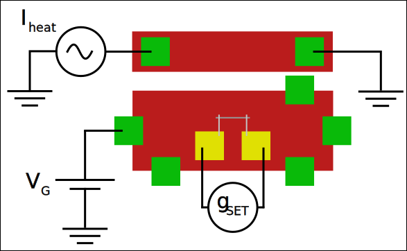- Measure $\delta \mu$ using an SET capacitively-coupled to the 2DEG while oscillating $\delta T$ through Joule heater
SET Response (Samani, PhD Thesis, 2017)

SET Response (Samani, PhD Thesis, 2017)

Note: No SET response inside incompressible IQH states
Entropy Signal (Samani, PhD Thesis, 2017)
Samani, PhD Thesis, 2017 (cont)
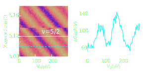- Asymmetry of measured lineshape suggests $\delta S \neq 0$
- No change in signal across $\nu = 5/2$ state
- What happened?
how do things look locally ?
Successful identification of fractional charge
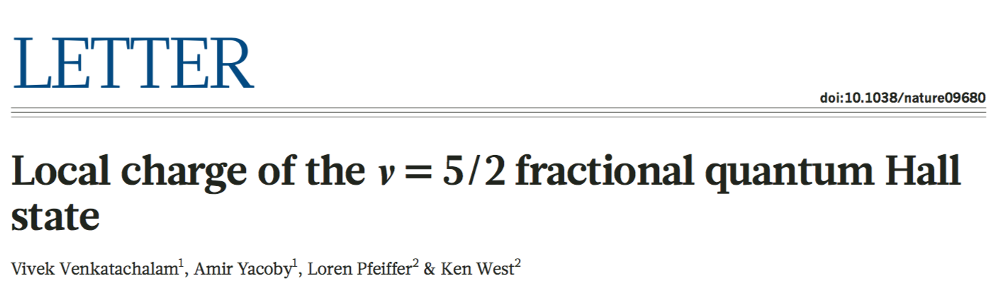Experimental insight:
- $\delta \mu$ measurement made by coupling SET to localized quasiparticle states
- Measured $e^* = e/4$ in $5/2$ state (compare with 7/3)
Entropy measurements in localized states
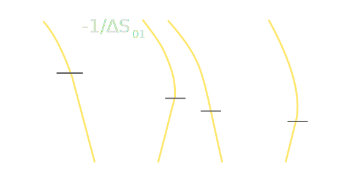Ben-Shach et al., PRL 110, 2013
- Charging spectrum of single (quasi-)particle addition energies, $\mu_N$, in localized state
- Coulomb blockade peak positions move with $T$ depending on $\Delta S$
$\left(\frac{\partial \mu}{\partial T}\right)_{p,N} = -\left(\frac{\partial S}{\partial N}\right)_{p,T} \Rightarrow \delta \mu_N = -(\Delta S_{N-1 \rightarrow N}) \delta T$
Measuring entropy of generic localized states
“[Local quasiparticle trap] spectra reflect the QP statistics just as electronic dot spectra reflect the spin and fermionic statistics of electrons ”
Ben-Shach et al.
- Proposed for MR quasiparticles
- Critera for other systems:
- System has charged particles that can be localized in a potential well
- Entropy depends on particle number
- Simplest realization: electrons in a quantum dot (spin entropy)
spin entropy in a few-electron quantum dot
quantum dot -- filling levels

Signature of entropy: $\delta \mu_N = -(\Delta S_{N-1 \rightarrow N}) \delta T$
Detailed Balance
Measurement in terms of balancing tunnel rates and degeneracy
$ \begin{align} \Gamma_{in} &= \Gamma_{N-1 \rightarrow N} \\ &= \Gamma \cdot d_{N} \cdot f(E_F - \mu_{N}, T) \\ \Gamma_{out} &= \Gamma_{N \rightarrow N-1} \\ &= \Gamma \cdot d_{N-1} \cdot [1-f(E_F - \mu_{N}, T)] \end{align} $
When $\Gamma_{in}=\Gamma_{out}$:
$ \frac{d_{N-1}}{d_N} = \frac{f(E_F - \mu_N, T)}{[1-f(E_F - \mu_{N}, T)]} $
$ \ln{\frac{d_N}{d_{N-1}}} = \frac{(\mu_N-E_F)}{k_B T}$
Charge Sensor -- Response
At $V_{mid}$:
$\Gamma_{in} = \Gamma_{out}$
$P(N-1) = P(N)$
Two things happen when $T$ changes:
- Transition width broadens
- $V_{mid}$ shifts if $\Delta S_{N-1 \rightarrow N} \neq 0$
Charge Sensor -- Fit
$G_{sens}(V_p,T) \sim \tanh\left(\frac{\alpha (V_p - V_{mid}(T))}{2 k_B T}\right)$
full measurement setup

2DEG characterization (Manfra Lab)
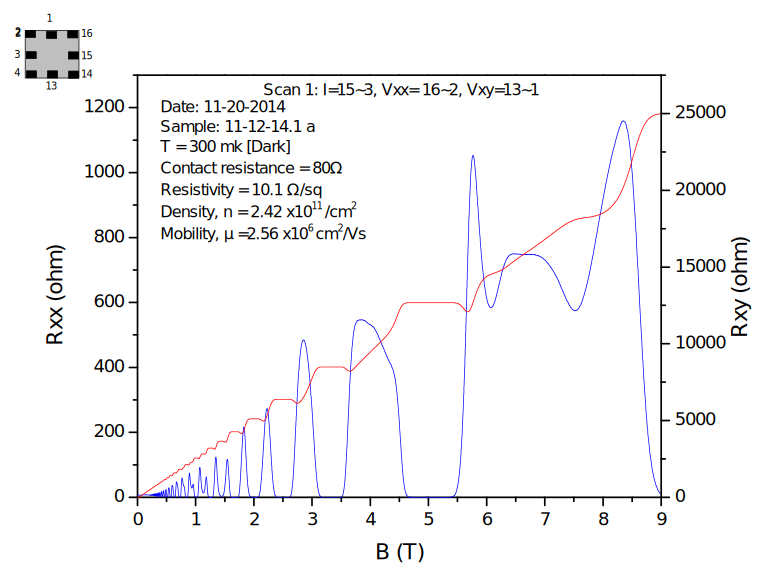Seeing Entropy Qualitatively in $\delta G_{sens}$
Quantitative Measurement
- Oscillate $\delta T$ with AC Iheat
- Measure $\delta G_{sens}$ with lock-in amplifier
$\delta G_{sens}(V_p, T) = \frac{dG_{sens}}{dT} \delta T$
$\delta G_{sens}(V_p, T) \sim -\delta T \left[ \frac{\alpha(V_p - V_{mid}(T))}{2 k_B T} - \frac{1}{2}\color{#13DAEC}{\frac{\Delta S}{k_B}} \right] \cosh^{-2}\left(\frac{\alpha(V_p - V_{mid}(T))}{2 k_B T}\right)$
Quantitative Measurement
$S_0 = 0$, $S_1 = k_B \ln{d_1}$
where $d_1=2$ is the degeneracy of the 1-electron state
Best fit: $\frac{\Delta S_{01}}{k_B} = (1.02 \pm 0.03) \ln{2}$
$\Delta S$ independent of $\delta T$
temperature calibration data
 single particle entropy!
why this worked
- Fast $\delta T$ oscillations
- Non-invasive charge sensing
- Thermally broadened transition
- $k_B \delta T < \Delta$
Not required
- Exact $\delta T$
- Gate voltage to energy conversion, $\alpha$
Is the measured parameter really entropy ?
spin-0 to spin-1/2 transitions with in-plane field
spin-0 to spin-1/2 transitions with in-plane field
spin-0 to spin-1/2 transitions with in-plane field
$S = k_B \sum_{-,+} p_{i}(B_\parallel, T) \ln{ p_{i}(B_\parallel,T) }$
with $p_{\pm}(B_\parallel, T) = (1+ e^{\mp \frac{g\mu_B B_{\parallel}}{k_B T}})^{-1}$
Tunable Degeneracy at 1$\rightarrow$2 transition
Tunable Degeneracy at 1$\rightarrow$2 transition
$S = k_B \sum_{-,+,\mathcal{S},\mathcal{T_+}} p_{i}(B_\parallel, T) \ln{ p_{i}(B_\parallel,T) }$
with $p_{\mathcal{S}/\mathcal{T_+}}(B_\parallel, T) = (1+ e^{\mp \frac{g\mu_B B_\parallel - \Delta_{ST}}{k_B T}})^{-1}$
What did we learn?
- New technique for measuring entropy down to $k_B$ in particular types of solid state systems
- Accuracy of measurement ~5%
- Confirmed some well-established physics in a new way (spin-1/2 statistics, $k_B$, ...)
- Most interesting new physics requires <50% accuracy
- The electron temperature in our device(s) is >70mK?!
Kondo States in Quantum Dots
- Unscreened spin-1/2: $S = k_B \ln{2}$
-
Coupling to single reservoir (1-channel Kondo):
$S = k_B \ln{2} \rightarrow 0$ as coupling increases -
Non-trivial entanglement structure in 2-channel Kondo model.
- $S = \frac{1}{2} k_B \ln{2}$ with two reservoirs strongly coupled
- B. Alkurtass, ..., I. Affleck, ..., Physical Review B 93, 1 (2016).
1-channel kondo: original device
$k_B T >> h \Gamma$: $\delta G_{sens}(V_p, T) \sim -\delta T \left[ \frac{\alpha(V_p - V_{mid}(T))}{2 k_B T} - \frac{1}{2}\color{#13DAEC}{\frac{\Delta S}{k_B}} \right] \cosh^{-2}\left(\frac{\alpha(V_p - V_{mid}(T))}{2 k_B T}\right)$
$k_B T << h \Gamma$: $\delta G_{sens} \sim G_0 \frac{k_B \delta T}{h \Gamma} \color{#13DAEC}{\frac{\Delta S}{k_B}} \frac{1}{1+(\frac{\alpha e(V-V_0)}{h \Gamma})^2}$
1-channel kondo: new device
- Few-electron dot (N~1)
- $k_B T < \Delta^{sm} < E^{sm}_{C}$
- Weakly coupled to open reservoir (right)
- Strongly coupled to many-electron dot (left)
- Many-electron dot (N>>1)
- $\Delta^{big} < k_B T < E^{big}_{C}$
- Electron spins free to flip due to small excited state splittings
- Coupled only to few-electron dot

1-channel kondo: brand new data

More 1- and 2-channel Kondo device physics to come!
(correctly) Identifying Majorana bound states
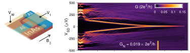F. Nichele, et al., PRL, 119, 2017
C-X Liu, et al., arXiv:1803.05423
(correctly) Identifying Majorana bound states
- Each Majorana mode present at the tunnel junction contributes a degeneracy of $\sqrt{2}$
- $\Delta S_{01} = \frac{1}{2}k_B \ln{2}$ for Majoranas
- $\Delta S_{01} = k_B \ln{2}$ for ABS
S. Smirnov, Physical Review B 92, 1 (2015).
non-Abelian statistics in $\nu = 5/2$
Possible measurements:
- Charging diagram ($\mu_N$ vs $T$) of localized state
- Difficult to localize without destroying
- Capacitance measurement of compressibility, $\kappa$
- Bulk measurement
- Small signal
Conclusions:
- Developed a thermodynamic measurement of few-particle entropy
- Measured entropy of a few-electron system to 5% accuracy
- Confirmed results by investigating magnetic field behavior
- Proposed extensions of this work in localized states with non-trivial statistics.
- Presented preliminary data on 1CK entropy measurements
This talk: https://nikhartman.github.io/ng_10-18
Contact me: nik.hartman@gmail.com
comparison of dilution refrigerators
Oxford Kelvinox (wet system)
- Base temperature: 14mK
- Filtering: 3 stage RC filter (MC) + brass epoxy/copper loom filter (CF)
- Sample mount: non-magnetic ceramic chip carriers with non-magnetic socket
BlueFors LD50 (dry system)
- Base temperature: 6mK
- Filtering: Pi + 3 stage RC filter (MC) + Eccosorb/copper loom filter (MC)
- Sample mount: non-magnetic FPC boards with Ni/Au plated card edge connectors
effect of pulse tube on noise spectrum
- Current noise through SET on GaAs set to 2$M\Omega$.
- Pulse tube turning on can be clearly heard in this dataset
effect of pulse tube on noise spectrum
- Current noise through SET on GaAs set to 2$M\Omega$.
effect of pulse tube on noise spectrum
- Vary conductance to separate sample and measurement noise
effect of pulse tube on noise spectrum
- Look for correlations between conductance and current noise
- RMS noise across sample ~5$\mu$V over 20kHz bandwidth
- Roughly half of this noise is due to pulse tube
- Following these measurements lead shielding added to compressor parts
low pass filtering
- Shielded graphene Hall bar with test filtering anchored to MC
- RC filters are crucial for low electron temperature
thoughts on electron temperature
- Eccosorb + RC filter should be sufficient
- Additional RC filtering on gate lines
- Radiation shielding and coupling to mixing chamber may be poor at magnet center
- More massive cold finger at cost of magnetic field sweep rate
- Smaller shield painted with radiation absorbing epoxy/silicon mix
- High frequency noise may couple in through grounds
- RC filter grounds create ground loop at high frequency, introducing current noise
- Additional dissipative high frequency filters
- Shielded FFC replaces loom
- Ground reference to MC